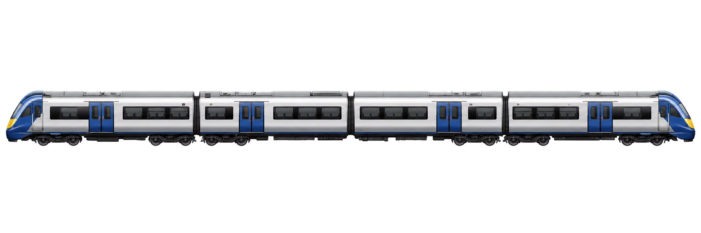
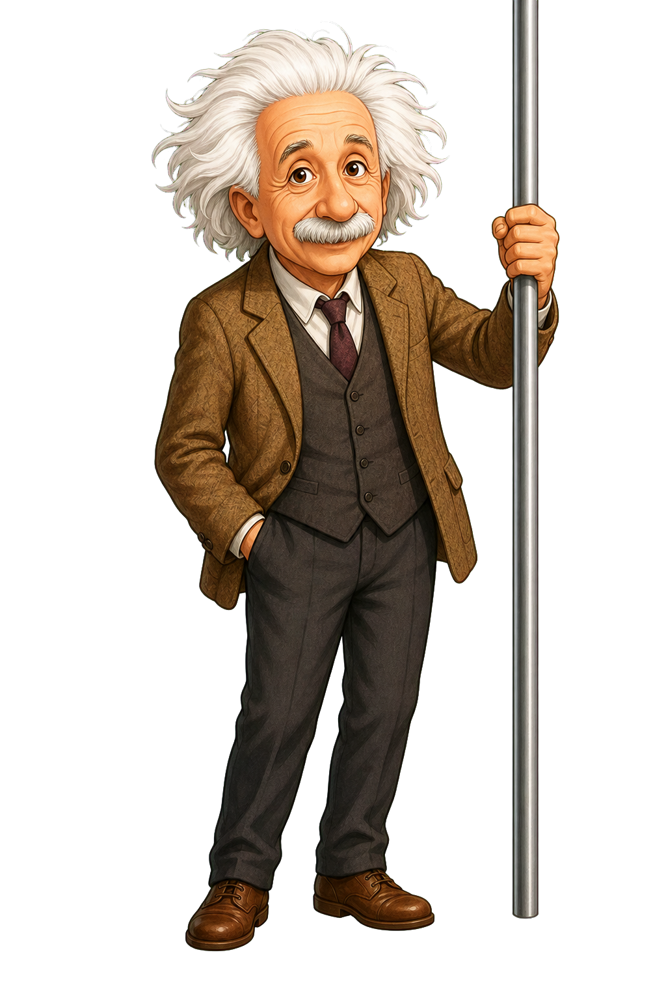
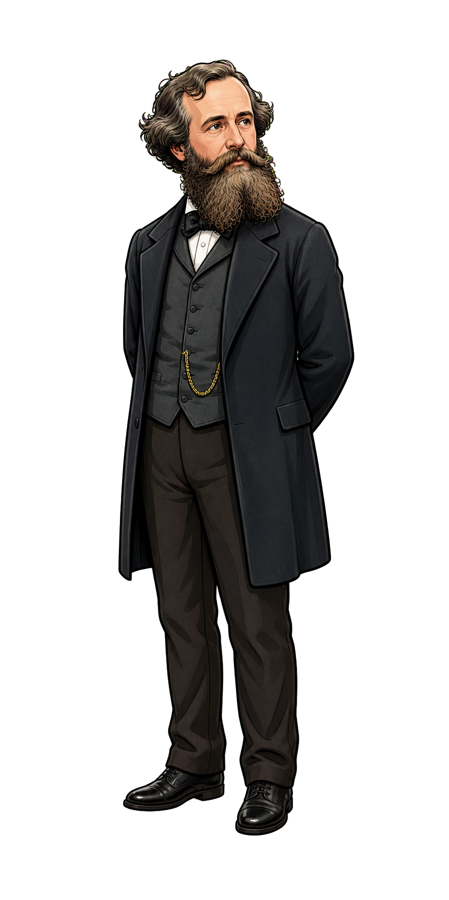

Dos observadores
Maxwell · andén
Einstein · tren



- Por cada 10 s del andén
- en el tren
- Factor γ
- Diferencia acumulada
- 0.0 s
¿De quién es el tiempo propio?
Einstein pulsa el botón de un cronómetro fijo en el vagón para ponerlo en marcha y vuelve a pulsarlo para pararlo. Las dos pulsaciones ocurren en el mismo lugar del vagón. Un solo reloj está presente en ambos sucesos y mide directamente el intervalo entre ellos. A ese intervalo lo llamamos tiempo propio, \Delta\tau_{\mathrm E}. Desde el andén, cada pulsación ocurre en un lugar distinto. Maxwell puede asignar una hora a cada una usando el reloj de ese punto del andén, siempre que ambos relojes estén sincronizados.
Esta igualdad vale para un tramo a velocidad constante. A v=0.8c, por cada 10 s del andén, el reloj del tren suma 6 s. Si cambias la velocidad, lo que ya marcaban los relojes se conserva y el nuevo ritmo se aplica desde ese instante.
¿Y si Einstein considera que se mueve Maxwell?
Puede hacerlo. Si comparamos dos tics del reloj de Maxwell, ambos ocurren en el mismo punto del andén. Ahora el tiempo propio es el de Maxwell, \Delta\tau_{\mathrm M}. Einstein usaría relojes sincronizados a lo largo del tren para asignar la hora a esos dos tics. Cada marco encuentra que el reloj móvil marcha más despacio. Al intercambiar los papeles también cambiamos la pareja de sucesos y qué relojes distantes consideramos simultáneos.
¿Qué cambia en la paradoja de los gemelos?
En ese experimento ambos relojes coinciden dos veces, en la salida y en el reencuentro. Entre esos mismos sucesos recorren trayectorias distintas. El gemelo del andén permanece en el mismo marco inercial durante todo el viaje. El viajero cambia de marco al dar la vuelta. Al reunirse comparan los relojes en persona y los dos están de acuerdo en el resultado: el viajero ha acumulado menos tiempo propio. Probar la paradoja de los gemelos.
La escena representa el marco del andén. El paso del tren se repite para mantenerlo a la vista. La distancia del dibujo es ilustrativa. Los contadores comparan tiempos asignados en ese marco, sin incluir el retraso de las señales luminosas. Cada esfera da una vuelta por minuto simulado.